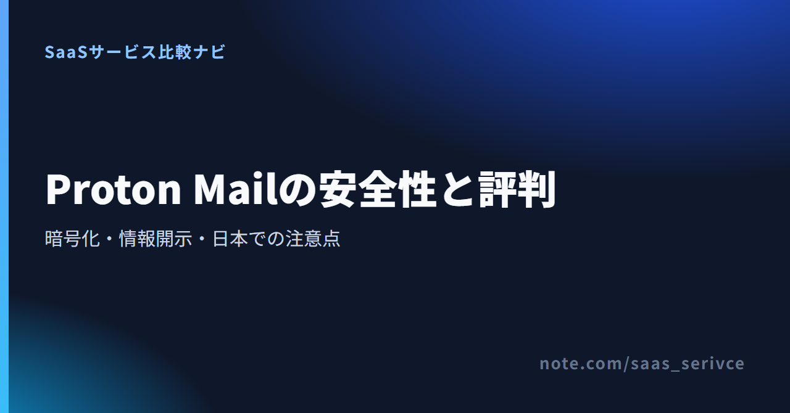
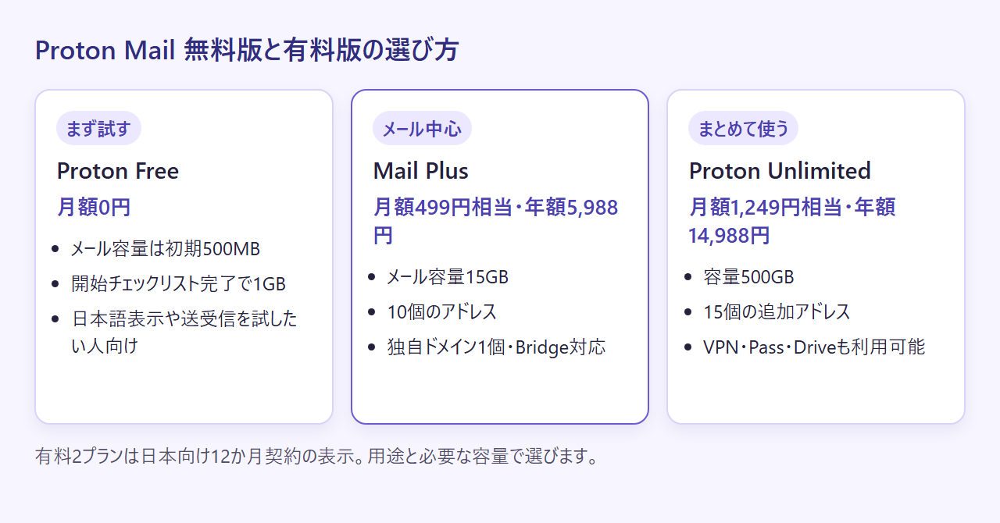

「暗号化メールなら、相手や件名、接続情報まで何も残らない」と考えていると、実際の仕組みとずれます。メール本文の保護、匿名性、法的要請、日々の使い勝手は別の問題です。
Proton Mailは本文の保護を重視する人には有力ですが、完全匿名を保証するサービスではありません。 未契約の立場から、公式情報と公開レビューをもとに、守られる範囲と日本で使う際の注意点を整理します。
Proton同士のメールは自動でエンドツーエンド暗号化されますが、送受信者や件名などのメタデータは同じ方法では守られません。 本文をメール事業者から守りたい人には向く一方、身元や通信の痕跡をすべて隠したい人には不十分です。
日本語の公式ページから無料で始められます。全面移行を急がず、外部宛メール、復旧、検索、外部メールソフトとの連携まで試すと、併用で十分かどうかを判断できます。
合うのは、次のような人です。
一方、外部宛を常に自動でエンドツーエンド暗号化したい人や、モバイル版OutlookなどからIMAP接続したい人には条件が合いません。外部宛は送り方で保護範囲が変わり、Bridgeは有料Mailプランのデスクトップ利用に限られます。
匿名性はメールサービスだけでは決まりません。Protonは、送受信者、受信メールの送信元IP、添付ファイル名、件名、送受信時刻など、配送に必要なメタデータを扱います。法的拘束力のある要請がスイス当局を経由した場合、特定アカウントの情報開示や収集を命じられることもあります。
暗号化済みの本文をProtonが復号できないことと、利用者を示す手がかりが一切残らないことは別です。匿名性を重視するなら、支払い方法、復旧先、利用端末の管理まで含めて考えます。
評価が分かれるのは安全性だけではありません。無料版の容量、日本語対応、検索、外部メールソフトとの連携でも意見が割れます。公式のレビュー紹介、契約者の記事、Redditの投稿は、同じ重さの評価ではありません。
公式のレビュー紹介では、プライバシー設計、無料で始められること、Gmailからの移行が評価点として挙げられています。ただし、公式ページは肯定的な声を選んだ紹介です。独立したレビュー全体の傾向とはみなせません。
2026年9月公開の日本語の契約レビューでも、プライバシー設計や日本語で使える点を評価する一方、Bridgeなどの制約を併記しています。Proton Freeは月額0円です。評判が自分の環境にも当てはまるかは、普段の送受信先や日本語表示で試せば確かめられます。
公開レビューで不満として挙がりやすいのは、端末間の機能差、検索、Bridge、サポートです。前述の2026年9月の契約レビューでは、有料プラン限定のBridgeや英語で届く一部通知などが不満点として挙げられていました。これは特定の契約者の評価であり、すべての利用者に当てはまるとは限りません。
公式仕様でも、Webの本文検索は端末上に検索用の索引を作る方式です。Androidの新アプリには、まだ提供されていない機能もあると案内されています。OS、アプリの版、プランが違えば使用感も変わるため、Redditの少数投稿から発生率を判断せず、自分が使う端末で検索と通知を試すのが確実です。
Proton Mailの保護範囲は、送信先と送り方によって変わります。Proton同士、通常の外部宛、パスワード保護、PGPを分けて理解しておきましょう。
Proton利用者同士のメールは、送信中に自動でエンドツーエンド暗号化されます。受信箱に保存される本文と添付ファイルにも、エンドツーエンド暗号化またはゼロアクセス暗号化が適用されます。Protonは暗号化済みの内容を復号できません。
件名と送受信アドレスも保存時には暗号化されますが、配送処理に必要なためエンドツーエンド暗号化の対象ではありません。本文とメタデータでは、保護の範囲が違います。
Proton以外へ通常送信するメールは、転送中にはTLSで保護されますが、相手側へ到着した後のコピーは既定でエンドツーエンド暗号化されません。相手側のメール事業者が扱うコピーまでProtonが管理するわけではないためです。
外部宛でも、パスワード保護メールかPGPを使えばエンドツーエンド暗号化できます。機密性の高い連絡なら、送信先ごとにどの方法で送るかを先に決めておきます。
メッセージヘッダーやメタデータはエンドツーエンド暗号化の対象外です。Protonのプライバシーポリシーには、送受信者、受信メールの送信元IP、添付ファイル名、件名、送受信時刻が扱われる情報として挙げられています。
したがって、本文が復号されるリスクと、誰が誰へいつ連絡したかを示す情報が残るリスクは分けて考えます。
報道や投稿で「Protonが情報を開示した」と見ても、それだけでメール本文の暗号化が破られたことにはなりません。法的手続き、渡されたデータ、本文の復号可否を分ける必要があります。
Protonは外国当局へ利用者情報を直接渡さず、法的拘束力のある要請はスイス当局を経由すると説明しています。ただし、スイス法に違反したと判断された場合は、特定アカウントについて一定の利用者情報の開示や収集を命じられることがあります。
一方、Protonは暗号化済みのメール本文や添付ファイルを復号できません。暗号化対象外の情報が法的手続きで開示されることと、暗号化された本文が破られることは別の問題です。
2021年の気候活動家に関する事例では、スイス当局の命令により特定アカウントのIPアドレスが収集されました。Protonの公式説明によると、この事例でメール本文は開示されていません。
この事例から、Proton MailでもIPアドレスなどの利用情報が取得され得ることが分かります。報道を読むときは、IPアドレス、復旧先、支払い情報、メール本文を「利用者情報」と一括りにせず、実際に開示された項目を確かめてください。
広告目的の本文解析やメール事業者による本文閲覧を避けたいなら、Protonの暗号化設計は目的に合います。法執行機関からメタデータも含めて隠したい場合は、Proton Mailだけでは足りません。端末紛失やマルウェアも、メール側の暗号化では解決できない問題です。
本文、通信相手との関係、端末内データのどれを守りたいかで、必要な対策は変わります。
日本から使う場合は、日本語表示だけでなく、問い合わせ、復旧、外部メールソフトとの連携が判断材料になります。特に、パスワードを忘れたときに既存メールを取り戻せるかは、登録直後に設定しておきたい点です。
Protonには日本語の公式サイトとヘルプセンターがあり、Web画面には日本語ロケールが用意されています。iOSとAndroidにも言語設定がありますが、すべてのアプリと画面が同じ範囲で日本語化されているとは限りません。
問い合わせフォームは日本語で表示できます。ただし、日本語による有人返信は案内されていないため、日本語対応が契約条件になる場合は、重要な連絡を移す前に問い合わせてください。
復旧フレーズは、パスワードの再設定と既存の暗号化データの復旧の両方に使えます。一方、復旧用メールアドレスや電話番号だけでできるのはパスワードの再設定です。既存メールを再び読むには、復旧フレーズや復旧ファイルなど、別のデータ復旧手段が必要になります。
署名済みリセット、端末バックアップ、信頼済み連絡先といった方法も用意されています。登録直後に復旧手段を設定し、回復情報をメールアカウントとは別の場所へ保管しておきましょう。
Proton Mail Bridgeは有料Mailプラン向けで、Windows、macOS、Linuxに対応します。IMAP/SMTPを使い、Outlook、Thunderbird、Apple Mailなどのデスクトップクライアントへ接続できます。
モバイル端末とPOP3には対応していません。ブラウザや公式アプリだけでよい人と、既存のメールソフトを使い続けたい人では、必要なプランが変わります。
まずはProton Freeで運用を確かめ、容量や外部連携に不足が出たらMail PlusまたはProton Unlimitedを検討する流れです。日本向け料金は円建てで表示されます。
Proton Freeは月額0円で、メールストレージは初期500MBです。アカウント作成後18日以内に開始チェックリストを終えると1GBへ増量されます。期限のない無料プランなので、日本語表示、主な送受信先、復旧方法を試す時間を十分に取れます。
無料版にも有料版と同じ水準の基本暗号化が提供されます。有料版との差は、主に容量、アドレス、独自ドメイン、フォルダ、Bridgeなどの追加機能です。
Mail Plusは15GB、10個のアドレス、1個の独自ドメインなど、メール中心の構成です。Unlimitedは500GB、15個の追加アドレス、3個の独自ドメインに加え、VPN、Pass、Driveなども含みます。一人でメールを中心に使うならMail Plus、Protonの複数サービスをまとめるならUnlimitedが候補です。複数ユーザーの管理が必要なチームは、個人向けの2プランだけで決めず、Business系プランを別に検討してください。
返金保証は1利用者につき1回で、現金や銀行振込は対象外です。App Storeなど第三者経由の契約には、各社の返金規定が適用されます。

日本からはカード、PayPal、Apple Pay、Google Pay、Bitcoin、現金、銀行振込を利用できます。Apple PayはmacOSのSafari、iOS、iPadOSで使えます。JPYに対応するのはカード、PayPal、Apple Pay、Google Payです。Bitcoinは無料アカウント作成後に利用できます。現金はUSD・EUR・CHF、銀行振込はCHF・USD・EURに限られ、どちらも返金対象外です。
請求書PDFはデスクトップのアカウント画面から取得でき、将来分の請求先情報も設定できます。解約またはFreeへの変更は管理画面から行い、請求期間末までは有料機能を利用できます。変更前には容量などの条件を満たす必要があります。
海外サービス利用時の税務処理は契約主体や取引条件で変わるため、必要に応じて税理士に確認してください。
無料枠と日本向け料金を見比べ、まずFreeで足りるか、有料化するならメール単体か複数サービスかを選べます。
Gmailからの移行には、全面移行、重要連絡だけの分離、一定期間の併用、現状維持という選択肢があります。
Easy Switchでは、Gmailのメール、連絡先、カレンダーを取り込めます。Gmail接続を使えば、Proton内でGmailアドレスのメールを送受信することもできます。ただし、カレンダーは継続同期ではなく、一度だけ取り込む方式です。
登録先の変更と復旧設定に対応でき、必要なら有料Bridgeへ移れる一人利用者は、全面移行を候補にできます。旧アドレスはすぐ閉じず、受信漏れを確認する期間を設けましょう。
重要連絡用にアドレスを分ける運用なら、日常の登録先を一度に変更せず始められます。この方法で変わるのは受信先とアカウントの役割分担で、金融や行政の連絡そのものが自動的に安全になるわけではありません。
Freeの容量内で運用できるかを確かめ、復旧手段を整えてから対象を増やします。
検索、外部連携、復旧、チーム管理のどれかが合わないなら、急いで全面移行する必要はありません。試験用に無料アカウントを用意すれば、普段の業務を止めずに確認できます。
移行ミスによる連絡の見落としも、サービスの安全性と並んで避けたいリスクです。
Proton VPNとProton Mailは評価軸も扱うデータも異なります。VPNは閲覧活動や接続メタデータを保持しないノーログ方針を掲げ、2026年の独立監査結果も公開しています。一方、Mailは配送のために送受信者や件名などのメタデータを扱い、特定アカウントへのスイス法上の要請に応じる場合があります。
VPNレビューの速度、サーバー、ストリーミングに関する評価は、メールの暗号化や情報開示へ流用できません。protonmail vpn reviewやproton vpn reviewの検索結果を読むときは、MailとVPNのどちらを評価しているのかを先に確かめてください。
契約前に迷いやすいのは、E2EEの対象、法的要請、無料版の安全性、口コミの読み方です。短い結論だけで判断せず、前提条件を分けます。
いいえ。Proton同士は自動でエンドツーエンド暗号化されますが、通常の外部宛は転送中のTLS保護にとどまり、到着後は既定でエンドツーエンド暗号化されません。外部宛でも、パスワード保護かPGPを使えばエンドツーエンド暗号化できます。
法的要請があったという事実だけで、本文まで読まれたとは判断できません。Protonは暗号化済みの本文と添付ファイルを復号できない一方、送受信者、件名、受信メールの送信元IPなどのメタデータを扱います。法的要請では、こうした暗号化対象外の情報が対象になり得ます。
基本的な暗号化は無料版と有料版で同じ水準です。有料版で増えるのは、主に容量、アドレス、独自ドメイン、フォルダ、Bridgeなどの機能です。Proton Freeの容量は初期500MBで、アカウント作成後18日以内に開始チェックリストを終えると1GBになります。
困りごとの発見には役立ちますが、投稿だけで発生率や全体傾向は分かりません。OS、端末、投稿日、契約プランを確認し、「自分のAndroid端末で検索できるか」「Bridgeが必要か」のような試用項目へ置き換えて読みます。
Proton Mailは、本文をメール事業者から守りたい人には有力です。一方、外部宛の通常送信、メタデータ、法的要請、端末の安全まで自動で解決するサービスではありません。守りたい情報と受け入れられる運用負荷が合うかで選びましょう。
迷う場合は現在のメールを止めずにProton Freeを併用し、普段の送受信先、検索、復旧方法から試すのが現実的です。
日本語の公式ページで無料枠と有料プランを確認できます。全面移行を急がず、自分の利用条件に合う範囲から始めてください。